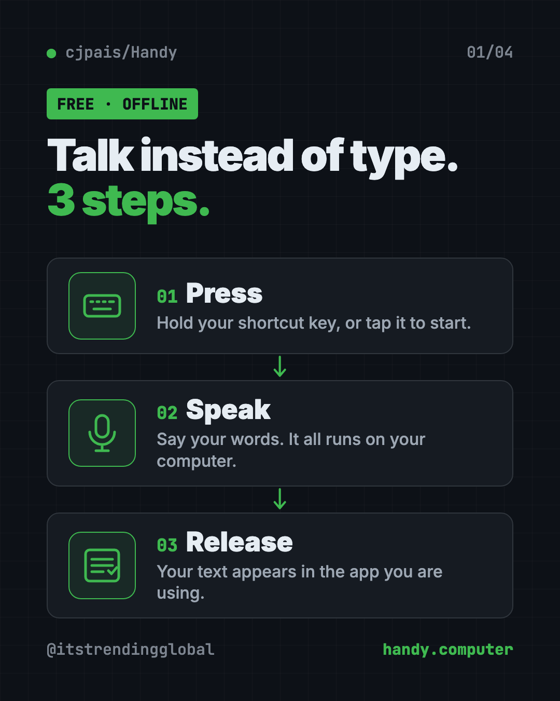
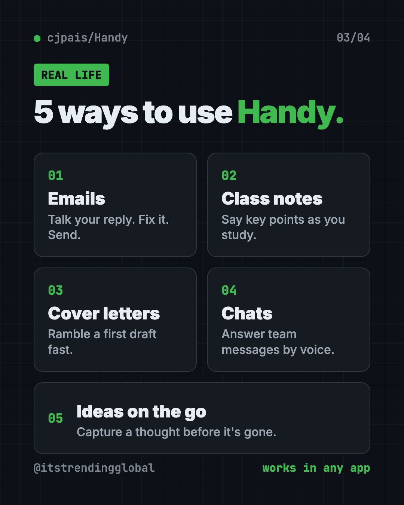
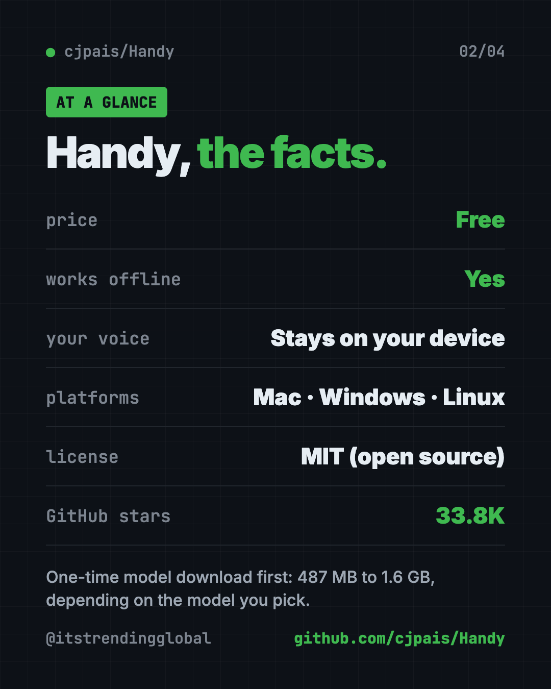
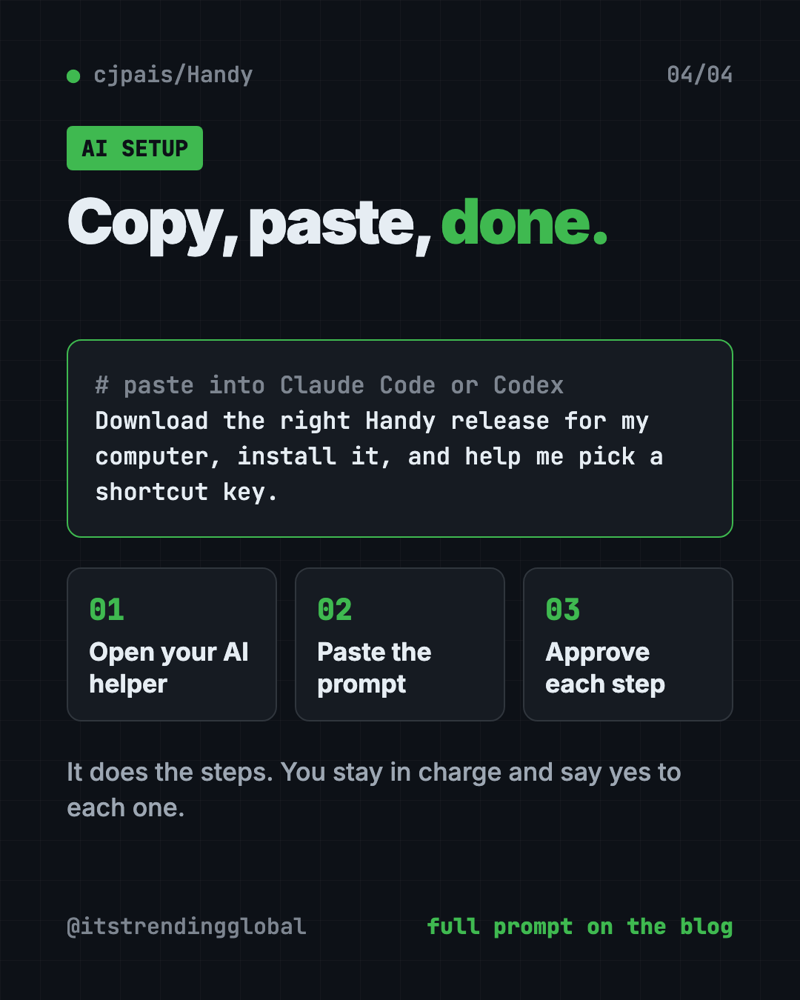

Handy: Free Offline Voice Typing App (2026 Guide)
- Free AI tools
- Published 2026-10-15
- 8 min read
- Updated 2026-10-16
- Stars 33.8K
- License MIT
- By the It's Trending Global team
Handy is a free offline voice typing app. Press a key, talk, and your words appear in any app on Mac, Windows or Linux. Your voice stays on your computer.
Handy is a free offline voice typing app for Mac, Windows and Linux. You press a shortcut, talk, and your words show up in any text box, with nothing sent to the cloud.
This guide shows you real ways to use it, how to install it in about two minutes, and even how to let an AI helper do the setup for you.
Key takeaways
- Free and open source. No subscription. The code is public under the MIT license.
- Private. Your voice is turned into text on your own computer, not on a company's server.
- Works in any app. Email, chat, documents, search bars. If you can type there, Handy can paste there.
- Mac, Windows and Linux. The latest version, 0.9.8, came out on October 3, 2026.
- One catch: you download a speech model once before it works (487 MB to 1.6 GB).

What is Handy?
Handy is a speech-to-text app. That simply means it turns what you say into written words.
Its makers call it "free, open source, and extensible" and say it "works completely offline." One tool, one job: you talk, Handy types.
It is made by developer CJ Pais and shared on GitHub, where it has about 33.8K stars. Stars are like bookmarks, so a lot of people find it useful.
How does Handy work?
Here is the whole thing, straight from the README (the project's main instructions page):
- Press a keyboard shortcut you choose.
- Speak while the shortcut is active.
- Release the key, and Handy turns your speech into text.
- Get your text pasted right into the app you are using.
You can hold the key to record and let go to stop. Or tap once to start and tap again to stop.
Behind the scenes, Handy skips the quiet parts of your recording, then uses a speech model to write down your words. A model is the trained "brain" that turns sound into text. You can pick Whisper models (Small, Medium, Turbo or Large) or Parakeet V3, which the README says runs well on a regular processor and detects your language automatically.
How to use Handy (real examples)
- Clear your inbox. Click into an email reply, hold your key, and talk. Fix a word or two, hit send.
- Take class notes. Say the main points out loud while you study. Way faster than typing.
- Draft a cover letter. Just ramble your story for two minutes. Then clean it up. The blank page is gone.
- Answer team chats. Reply to Slack or WhatsApp Web messages without breaking your flow.
- Catch ideas fast. Open a notes app and dump the thought before it slips away.

💡 Tip: Talk in full sentences, like you are explaining to a friend. You will spend less time fixing the text after.
Is Handy really free?
Yes. Handy is free to download and use. The README does not mention any paid plan, trial or premium tier.
The makers say accessibility tools "belong in everyone's hands, not behind a paywall." Sponsors like Wordcab, Epicenter, Bolt AI and Canty Digital help support the project.
Does Handy work offline?
Yes. Your voice is turned into text on your computer, and no audio is sent to the cloud.
You only need the internet once, to download the app and a speech model. After that, it works on planes, trains and bad Wi-Fi.
Handy at a glance
| Price | Free |
| Works offline | Yes, after a one-time model download |
| Platforms | Mac, Windows, Linux |
| License | MIT (open source) |
| Latest version | 0.9.8 (October 3, 2026) |
| Model download | 487 MB to 1.6 GB, depending on the model |
| Best for | Anyone who types a lot and wants private voice typing |
Who should use Handy?
- Writers and bloggers who think faster than they type.
- Students taking notes or drafting essays.
- Job seekers writing cover letters and emails.
- Busy professionals buried in messages.
- People who find typing hard or tiring. Handy was built with accessibility in mind.
- Privacy fans who do not want their voice on someone else's server.
It is a desktop app, so it is not for typing on your phone.

How to install Handy in 2 minutes
These are the official steps from the Handy README. You need a computer with a microphone.
- Download the latest version from the Releases page on Handy's GitHub, or from the website handy.computer.
- Install it like any other app.
- Open Handy and say yes to two permissions: microphone (so it can hear you) and accessibility (so it can paste text into other apps).
- Pick your keyboard shortcut in Settings.
- Start talking! Click into any text box, press your shortcut and speak.
Before the first use, Handy downloads a speech model. You can switch models later in Settings.
⚠️ Heads up: The speech model is a big download (487 MB to 1.6 GB). Do it on good Wi-Fi, not on your phone's data.
Install with one command
Prefer typing a command? Open Terminal (Mac) or PowerShell (Windows).
On a Mac with Homebrew (a free app installer), copy and paste this:
brew install --cask handy
On Windows, copy and paste this:
winget install cjpais.Handy
On Debian or Ubuntu Linux, download the .deb file first, then copy and paste this:
sudo apt install ./Handy_*.deb
⚠️ Heads up: The README says the Homebrew and winget versions are not run by the Handy team. If you want the official file, use the Releases page.
Linux users also need a small helper so Handy can type for you. The README suggests xdotool on X11 and wtype or dotool on Wayland, and says Wayland support is still limited. On Ubuntu 26.04, wtype does not work, so you need ydotool with a few extra steps.
Let Claude or Codex set it up for you
Claude Code and OpenAI Codex are AI helpers that can run setup steps on your computer for you. You paste a request, it does the steps, and you approve each one.
Copy and paste this:
Please help me install Handy, the free offline voice typing app.
1. Check what computer I have (Mac, Windows or Linux, and which chip).
2. Download the right file for my computer from github.com/cjpais/Handy/releases.
3. Install it, and tell me what each step does before you run it.
4. Walk me through granting microphone and accessibility permissions.
5. Help me choose a keyboard shortcut that works on my keyboard.
Then try asking:
Handy can't paste into my apps. Walk me through checking its permissions.
Which Handy speech model should I pick for my computer, and why?
I'm on Linux. Read the Handy README and help me install the right text input tool.

💡 Tip: Only say yes to steps you understand. If something looks odd, ask the AI helper "what does this do?" before you approve it.
What are Handy's limits?
The makers say Handy is "actively being developed" and has some known issues. The ones most people will notice:
- Bluetooth headsets on Mac can make your sound worse while recording. Pick your Mac's built-in mic in Handy instead.
- The fn (Globe) key only works on Apple keyboards. With another brand, use Control, Option, Shift or Command in your shortcut.
- Work firewalls can block the model download. The README explains how to add models by hand.
- Rare clipboard mix-ups. Sometimes Handy pastes something you copied earlier. The README has fixes, including a "Reliable Paste" option still in beta (test version).
Our take
Handy does one job and does it well. If you want a free offline voice typing app, it is one of the simplest picks.
What we like:
- Truly free, with no paid tier in the README.
- Your voice never leaves your computer.
- Works in every app, not just one special window.
- Several models to choose from, so older laptops can still run it.
- Honest docs that list known problems up front.
What to watch for:
- The first model download is big.
- Linux, especially Wayland, needs extra setup.
- It is still young, so expect small bugs now and then.
- The code is MIT licensed, but the Handy name and logo are not open source. Copies must use their own branding.
Like Handy? Try Meetily, free AI meeting notes that stay on your computer. Need to turn long recordings into text? Read our VibeVoice guide.
FAQ
Is Handy free to use?
Yes. Handy is free and open source under the MIT license. The README does not mention any paid plan or subscription.
Does Handy send my voice to the cloud?
No. Handy turns your speech into text on your own computer. The makers say no audio is sent to the cloud.
Can I use Handy without internet?
Yes. After you download the app and a speech model once, Handy works fully offline.
Does Handy work on Windows and Linux?
Yes. Handy runs on Mac, Windows and Linux. Linux users may need a small helper tool so Handy can type text for them.
Which apps does Handy work with?
Handy pastes your words into whatever text box you are using. That includes email, chat apps, documents and search bars.
How big is the Handy download?
On top of the app, you download a speech model once. The models range from 487 MB to 1.6 GB, depending on which one you pick.
Get Handy: github.com/cjpais/Handy
Follow @itstrendingglobal on Instagram for one free, useful tool every day.
Keep reading

PureMac: Free CleanMyMac Alternative, No Subscription
PureMac is a free CleanMyMac alternative. It clears junk, fully uninstalls apps and finds duplicates, with no subscription, no tracking and no scare tactics.

Strata: Run Big Local AI on a Gaming PC, Free
Strata is a free installer that runs big, private local AI on a gaming PC. It sets up a large Qwen model, so your chats never leave your computer.

Tolaria: A Free Offline Notes App You Fully Own (2026)
Tolaria is a free offline notes app for Mac, Windows and Linux. Your notes are plain files you own, with full version history and no account.